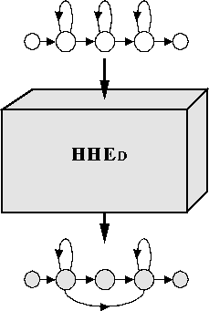

In chapter 8, the basic processes involved in training a continuous density HMM system were explained and examples were given of building a set of HMM phone models. In the practical application of these techniques to building real systems, there are often a number of problems to overcome. Most of these arise from the conflicting desire to have a large number of model parameters in order to achieve high accuracy, whilst at the same time having limited and uneven training data.
As mentioned previously, the HTK philosophy is to build systems incrementally. Starting with a set of context-independent monophone HMMs, a system can be refined in a sequence of stages. Each refinement step typically uses the HTK HMM definition editor HHED followed by re-estimation using HEREST. These incremental manipulations of the HMM set often involve parameter tying, thus many of HHED's operations involve generating new macro definitions.

The principle types of manipulation that can be performed by HHED are